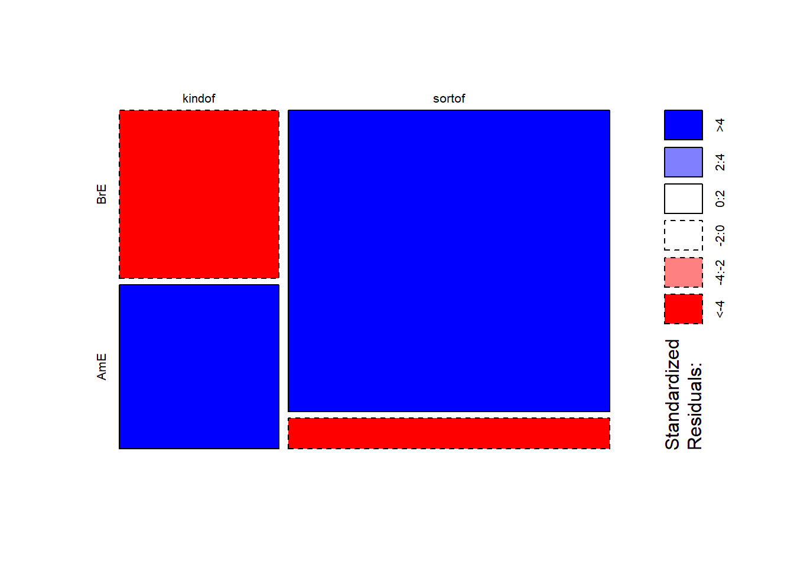
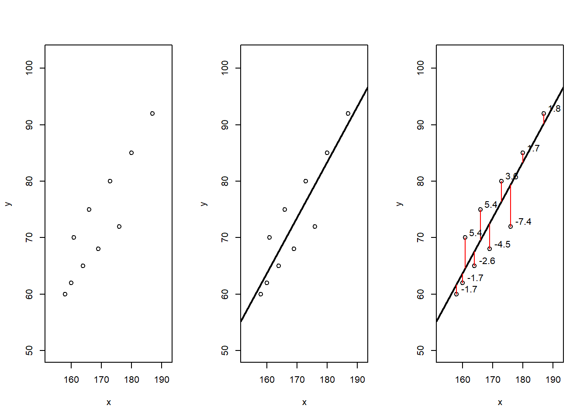
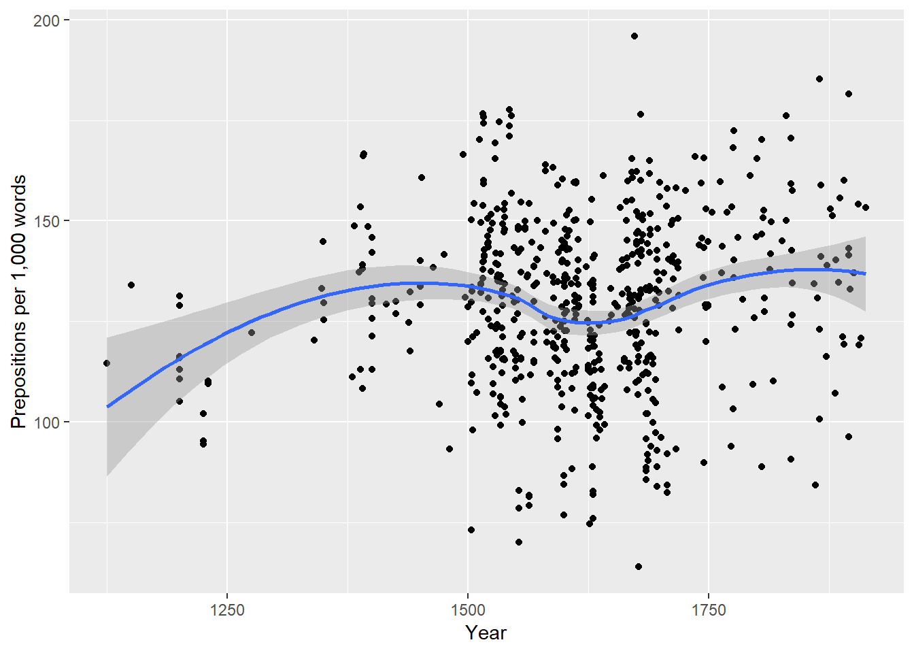
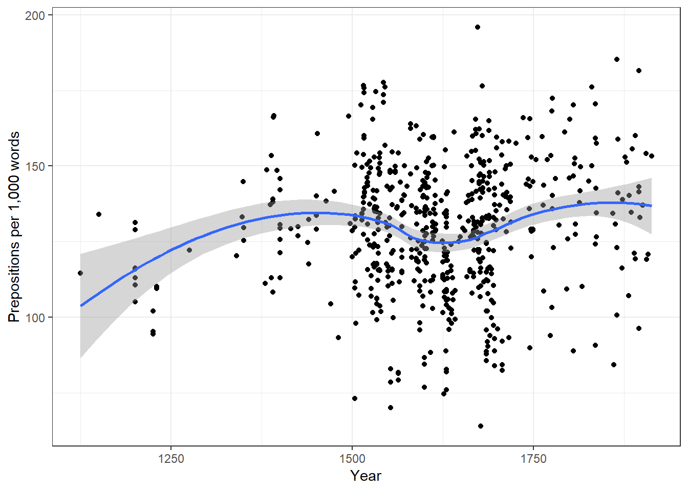
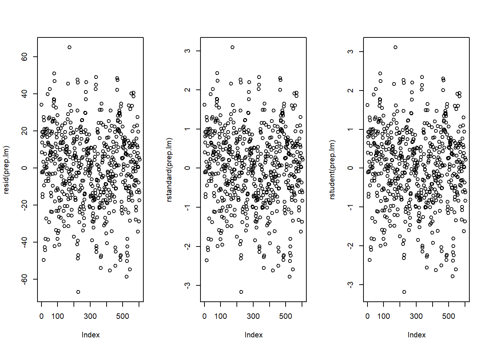
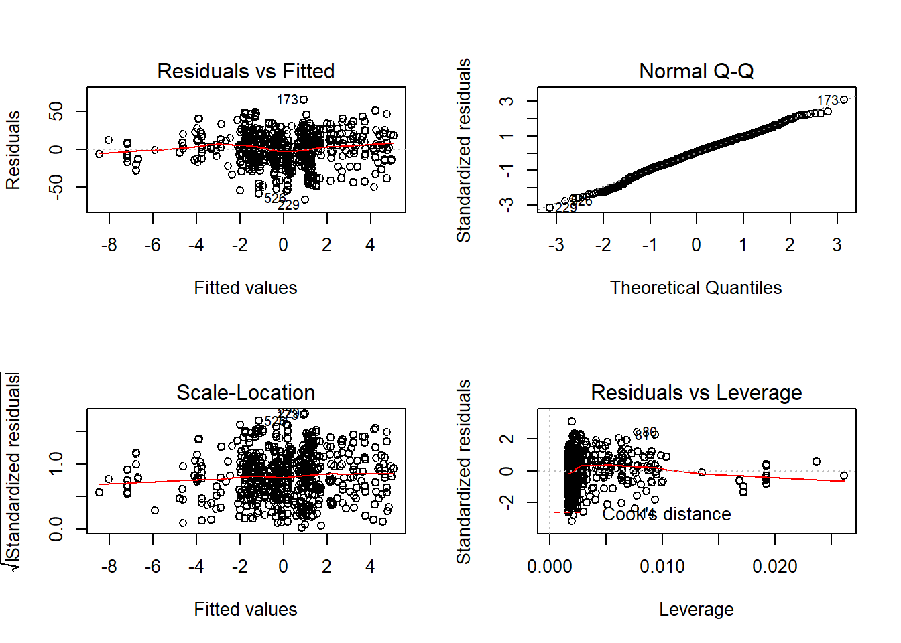
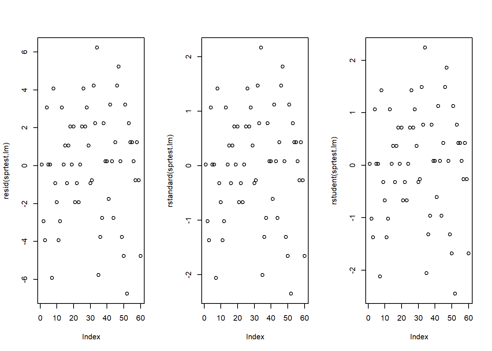
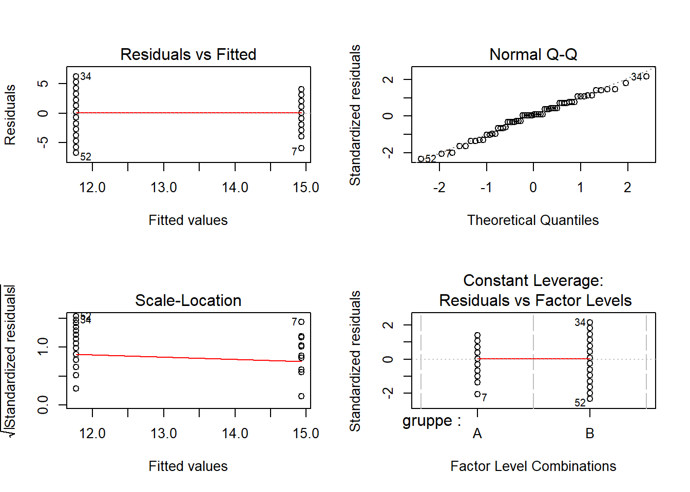

Basic Inferential Statistics
UQ SLC Digital Team
2019-01-23

1 Introduction
This tutorial introduces basic statistical techniques from inferential statistics for hypothesis testing. The first part of this section focuses on basic non-parametric tests such as the chi-square family of tests while the second part introduces simple regression models and discusses their underlying logic.
2 Non-Parametric Tests
This section focuses on test that do not require the data to be distributed normally. Tests that do not rewuire normal data are referred to as non-parametric tests (test that require the data to be distributed normally are analogously called parametric tests). We focus on non-parametric tests first as this family of test in frequently used in linguistics. In the later part of this section, we will focus on regression modelling where assumptions of about the data become more important.
2.1 Pearsons’s Chi-Square Test
To explore how chi-square tests (or Pearsons’s chi-square tests, chi-squared tests, or simply \(\chi^{2}\) tests) work, we will focus on a practicla example. In this example, we will test whether speakers of American English (AmE) and speakers of British English (BrE) differ in their use of the near-synonyms sort of and kind of as in “He’s sort of stupid” and “He’s kind of stupid”. As a first step, we formulate the hypothesis that we want to test (H\(_{1}\)) and its Nullhypothesis (H\(_{0}\)). The Alternativ- or Testhypothesis reads:
H\(_{1}\): Speakers of AmE and BrE differ with respect to their preference for sort of und kind of.
while the Nullhypothesis (H\(_{0}\)) states
H\(_{0}\) Speakers of AmE and BrE do not differ with respect to their preference for sort of und kind of.
The H\(_{0}\) claims the non-existence of something (which is the more conservative position) and in our example the non-existence of a correlation between variety of English and the use of sort of und kind of. The question now arises what has to be the case in order to reject the H\(_{0}\) in favor of the H\(_{1}\).
To answer this question, we require information about the probability of error, i.e. the probability that the H\(_{0}\) does indeed hold for the entire population. Before performing the chi-square test, we follow the convetion that the required significance level is 5 percent. In other words, we will reject the H\(_{0}\) if the likelyhood for the H\(_{0}\) being true is less than 5 percent given the distribution of the data. In that case, i.e. in case that the likelihood for the H\(_{0}\) being true is less than 5 percent, we consider the result of the chi-square test as statistically significant. This means that the observed distribution makes it very unlikey that there is no correlation between the variety of English and the use of sort of and kind of.
Let us now assume that we have performed a search for sort of and kind of in two corpora representing American and British English and that we have obtained the following freqeuncies:
| BrE | AmE | |
|---|---|---|
| kindof | 181 | 177 |
| sortof | 655 | 67 |
In a first step, we now have to caluculate the row and column sums of our table.
I had the same question. I have tried all solutions provided above and none of them worked… But I have found a solution that works for me, and hopefully for others too.
| BrE | AmE | Total | |
|---|---|---|---|
| kindof | 181 | 655 | 836 |
| sortof | 177 | 67 | 244 |
| Total | 358 | 722 | 1080 |
Next, we calculate, the values that would have expected if there was no correlation between variety of English and the use of sort of and kind of. In order to get these “expected” freqeuncies, we apply the equation below to all cells in our table.
\(\frac{Column total*Row total}{Overall total}\)
In our example this means that for the cell with [+]BrE [+]kindof we get:
\(\frac{836*358}{1080} = \frac{299288}{1080} = 277.1185\)
For the entire table this means we get the following expected values:
| BrE | AmE | Total | |
|---|---|---|---|
| kindof | 277.11850 | 558.8815 | 836 |
| sortof | 80.88148 | 163.1185 | 244 |
| Total | 358.00000 | 722.0000 | 1080 |
In a next step, we calculate the contribution of each cell to the overall \(\chi^{2}\) value (\(\chi^{2}\) contribution). To get \(\chi^{2}\) contribution for each cell, we apply the equation below to each cell.
\(\frac{(observed – expected)^{2}}{expected}\)
In our example this means that for the cell with [+]BrE [+]kindof we get:
\(\frac{(181 – 277.1185)^{2}}{277.1185} = \frac{-96.1185^{2}}{277.1185} = \frac{9238.766}{277.1185} = 33.33868\)
For the entire table this means we get the following \(\chi^{2}\) values:
| BrE | AmE | Total | |
|---|---|---|---|
| kindof | 33.33869 | 16.53082 | 49.86951 |
| sortof | 114.22602 | 56.63839 | 170.86440 |
| Total | 147.56470 | 73.16921 | 220.73390 |
The sum of \(\chi^{2}\) contributions in our example is 220.7339. To see if this value is staistically significant, we need to calculate the degrees of freedom because the \(\chi\) distribution differes across degrees of freedom. Degrees of freedom are calculated accroding to the equation below.
\(DF = (rows -1) * (columns – 1) = (2-1) * (2-1) = 1 * 1 = 1\)
In a last step, we check whether the \(\chi^{2}\) value that we have calculated is higher thana critical value (in which case the correlation in our table is significant). Degrees of freedom are relevcvenat here because the critical values is dependent upon the degrees of freedom: the more degrees of freedom, the higher the critical value, i.e. the harder it is to breach ethe level of significance.
Since theer is only 1 degree of freedom in our case, we need to consider only the first column in the table of critical values below.
| DF | p<.05 | p<.01 | p<.001 |
|---|---|---|---|
| 1 | 3.84 | 6.64 | 10.83 |
| 2 | 5.99 | 9.21 | 13.82 |
| 3 | 7.82 | 11.35 | 16.27 |
| 4 | 9.49 | 13.28 | 18.47 |
| 5 | 11.07 | 15.09 | 20.52 |
Since the \(\chi^{2}\) value that we have calculated is much higher than the critical value provided for p<.05, we can reject the \(H_{0}\) and may now claim that speakers of AmE and BrE differ with respect to their preference for sort of und kind of.
Before we summarize the results, we will calculate the effect size which is a measure for how strong the correleations are.
2.1.1 Effect Sizes in Chi-Square
Effect sizes are important because they correlations may be highly significant but the effect between variables can be extremely weak. The effect size is therefore a measure how strong the correlation or the explanatory and predictive power between variables is.
The effect size measure for \(\chi^{2}\) tests can be either the \(\phi\)-coeffizient (phi-coeffizient) or Cramer’s \(\phi\) (Cramer’s phi). The \(\phi\)-coeffizient is used when dealing with 2x2 tables while Cramer’s \(\phi\) is used when dealing with tables with more than 4 cells. The \(\phi\) coeffizient can be calculated by using the equation below (N = overall sample size).
\(\phi = \sqrt{\frac{\chi^{2}}{N}}\)
In our case, this means:
\(\phi = \sqrt{\frac{220.7339}{1080}} = \sqrt{0.2043832} = 0.4520876\)
The \(\phi\) coefficient varies between 0 (no effect) and 1 (perfect correlation). Für die Einteilung in schwache, moderate und starke Effekte kann man der Einteilung für \(\omega\) (kleines Omega) folgen, sodass man bei Werten von .1 von schwacher, um einen Wert bei 0.3 von moderater und ab .5 von einer starken Effektstärke sprechen kann . Wir haben es in diesem Beispiel also mit einem mittleren Effekt oder Zusammenhang zu tun.
2.1.2 Chi-Square in R
Befroe we summarize the results, we will see how to perform a chi-square test in R. In addition to what we have done above, we will also visualize the data. To begin with, we will have a look ate the data set (which is the same data we have used above).
chidata # inspect data## BrE AmE
## kindof 181 177
## sortof 655 67We will now visualize the data with an association. Bars above the dashed line indicate that a feauture combination occurs more frequently than expected by chance. The width of the bars indicates the frequency of the feature combination.

The fact that the bars are distributed complimentarily (top left red and below bar; top right black above bar; bottom left black above bar; bottom right red below bar) indicates that the use of “sort of” and “kind of” differs across AmE and BrE. We will check whether the mosaicplot confirms this impression.
mosaicplot(chidata, shade = TRUE, type = "pearson", main = "") # mosaic plot
The color contarst in the mosaicplot substantiate the impression that the two varieties of English differ significantly. To ascertain whether teh differences are statistically significant, we can now apply the chi-square test.
chisq.test(chidata, corr = F) # perform chi square test##
## Pearson's Chi-squared test
##
## data: chidata
## X-squared = 220.73, df = 1, p-value < 2.2e-16The results reported by R are identical to the results we derived by hand and confirm that BrE and AmE differ significantly in their use of “sort of” and “kind of”. In a next setp, we calculate the effect size.
# calculate effect size
sqrt(chisq.test(chidata, corr = F)$statistic / sum(chidata) * (min(dim(chidata))-1))## X-squared
## 0.4520877The phi coefficient of .45 shows that variety of English correlates moderately with the use of “sort of” and “kind of”. We will now summarize the results.
2.1.3 Summarizing Chi-Square Results
The results of our analysis can be summaried as follows: A \(\chi\)^{2}-Test confirms a highly significant correlation of moderate size between the variety of English and the use of the near-synonymous hedges sort of and kind of (\(\chi\)^{2} = 220.73, df = 1, p \(<\) .001***, \(\phi\) = .452).
2.1.4 Requirements of Chi-Square
Chi-square tests depend on certain requirements that, if violated, negativly affect the reliabilty of the results of the test. To provide reliable results, 80 percent of cells in a table to which the chi-square test is applied have to have expected values of 5 or higher and at most 20 percent of expected values can be smaller than 5 (vgl. [@bortz1990verteilungsfreie] 98). In addition, none of the expected values can be smaller than 1 (vgl. [@bortz1990verteilungsfreie] 136) because then, the estimation, which relies on the \(\chi\)^{2}-distribution, becomes too imprecise to allow meaningful inferences ([@cochran1954somemethods]).
If these requierments are violated, then the Fisher’s Exact Test is more reliable and offers the additional advantage that these tests can also be applied to data that represent very small sample sizes. When applying the Fisher’s Exact Test, the probabilities for all possibles outcomes are calculated and the summed probability for the observed or more extreme results are determined. If this sum of probabilities exceeds five percent, then the result is deemed statistically significant.
2.2 Extensions of Chi-Square
In the following, we will have a look at tests and methods that can be used if the requirements for ordinary (Pearson’s) chi-square tests are violated and their use would be inaapropriate
2.2.1 The Yates-Correction
If all requirements for ordinary chi-square tests are acceptable and only the sample size is the issue, then applying a so-called Yates-correction may be appropriate. This type of correction is used in cases where the overall sample size lies inbetween 60 and 15 cases ([@bortz1990verteilungsfreie] 91). The difference between the ordinary chi-square and a Yates-corrected chi-square lies in the fact that the Yates-corrected chi-square is calculated according to the equation below.
\(\frac{(|observed – expected|-0.5)^{2}}{expected}\)
According to this formula, we would get the values shown below rather than the values tabulated above. It is important to note here that this is only a demonstration because a Yates-Correction would actually be inapproprate as our sample size exceeds 60 cases.
| Variant | BrE | AmE | Total |
|---|---|---|---|
| kind of | 32.9927 | 113.0407 | 146.0335 |
| sort of | 16.3593 | 56.0507 | 72.41 |
| Total | 49.352 | 169.0914 | 218.4434 |
If the Yates-correction were applied, then this results in a slightly lower \(\chi\)^{2}-value abd thus to more conservative results compared with the traditional test according to Pearsons.
2.2.2 Chi-Square within 2*k Tables
Although the chi-sqaure test is widely used, it is often used inappropriately. This is especially the case when chi-square tests are applied to data representing tables with more than two rows and more than two columns. It is important to note that applying the common Pearsons’ chi-square test to subtables of a larger table is inappropriate because, in such cases, a modified variant of Pearsons’ chi-square test is warranted. We will go through two examples that represnt different scenarios where we are dealing with subsamples of larger tables and a modified version of the chi-sqaure test should be used rather than Pearsons’ chi-square.
In this first example, we are dealing with a table consisting of two columns and multiple rows, a so-called 2*k table (two-by-k table). In order to test if a feature combination, that is represented by a row in the 2*k table, is significantly more common compared with other feature combineations, we need to implement the chi-sqaure equation from [@bortz1990verteilungsfreie](126-127).
In this example, we want to find out whether soft and hard X-rays differ in their effect on grasshopper larva. The question is whether the larva reach or do not reach a certain life cicle depending on whtehre they are exposed to soft X-rays, hard X-rays, light , or beta rays. The dat for this example is provided below.
| Mitosis not reached | Mitosis reached | Total | |
|---|---|---|---|
| X-ray soft | 21 | 14 | 35 |
| X-ray hard | 18 | 13 | 31 |
| Beta-rays | 24 | 12 | 36 |
| Light | 13 | 30 | 43 |
| Total | 76 | 69 | 145 |
If we would apply an ordinary chi-square test, we would ignore that all data were collected together and using only a subsample would ignore the data set of which the subsample is part of. In other words, te subsampel is not independent from the other data (as it represents a subsetion of the whiole data set). However, for exemplary reasons, we will apply an ordinary chi-square test first and then compare its results to results prvided by the correct version of the chi-square test. Ina first step, we create a table with all the data.
# create tdata
wholetable <- matrix(c(21, 14, 18, 13, 24, 12, 13, 30), byrow = T, nrow = 4)
colnames(wholetable) <- c("reached", "notreached") # add column names
rownames(wholetable) <- c("rsoft", "rhard", "beta", "light") # add row names
wholetable # inspect data## reached notreached
## rsoft 21 14
## rhard 18 13
## beta 24 12
## light 13 30Now, we extract the subsample from the data.
subtable <- wholetable[1:2,] # extract subtable
subtable # inspect subtable## reached notreached
## rsoft 21 14
## rhard 18 13Next, we apply the ordinary chi-square test to the subsample.
# simple x2-test
chisq.test(subtable, corr = F)##
## Pearson's Chi-squared test
##
## data: subtable
## X-squared = 0.025476, df = 1, p-value = 0.8732Finally, we perform the correct chi-square test.
# load function for correct chi-square
source("rscripts/x2.2k.r")
x2.2k(wholetable, 1, 2)## $Description
## [1] "rsoft against rhard by reached vs notreached"
##
## $`Chi-Squared`
## [1] 0.025
##
## $df
## [1] 1
##
## $`p-value`
## [1] 0.8744
##
## $Phi
## [1] 0.013
##
## $Report
## [1] "Conclusion: the null hypothesis cannot be rejected! Results are not significant!"Below is a table comparing the results of the two chi-square tests.
library(knitr)
critval <- matrix(c("chi-squared", 0.0255, 0.025, "p-value", 0.8732, 0.8744), ncol = 3, byrow = T)
# add column names
colnames(critval) <- c("", "chi-square" , "chi-square in 2*k-tables")
kable(critval, caption = "Table adapted from Bortz (1990: 126)")| chi-square | chi-square in 2*k-tables | |
|---|---|---|
| chi-squared | 0.0255 | 0.025 |
| p-value | 0.8732 | 0.8744 |
The comparison shows that, in this example, the results of the two tests are very similar but this may not alwyas be the case.
2.2.3 Chi-Square within z*k Tables
Eine weitere Anwendung, bei der der \(\chi\)^{2}-Test häufig inkorrekter Weise verwendet wird, ist das Testen von Teilen von Tabellen mit mehr als zwei Zeilen und mehr als zwei Spalten, d.h. z*k-Tabellen (z: Zeile, k: Kolumne). Ein Beispiel wird in besprochen, der auch das -Skript für die korrekte Version des \(\chi^{2}\)-Test erstellt hat.
Laden wir zuerst die Daten, die in dem Beispiel von besprochen werden, in dem es darum geht, ob sich nicht nur Register und EMOTION-Metaphern unterscheiden, sondern auch darum, ob sich gesprochene Konversationen von Fiktion im Gebrach von EMOTION IST LICHT und EMOTION IST EINE NATURKRAFT unterscheiden.
# create table
wholetable <- matrix(c(8, 31, 44, 36, 5, 14, 25, 38, 4, 22, 17, 12, 8, 11, 16, 24), ncol=4)
attr(wholetable, "dimnames")<-list(Register=c("acad", "spoken", "fiction", "new"),
Metaphor = c("Heated fluid", "Light", "NatForce", "Other"))Es ergibt sich aus diesen Daten Tabelle ().
| Register | Heated fluid | Light | NatForce | Other |
|---|---|---|---|---|
| acad | 8 | 5 | 4 | 8 |
| spoken | 31 | 14 | 22 | 11 |
| fiction | 44 | 25 | 17 | 16 |
| new | 36 | 38 | 12 | 24 |
Würden wir einen normalen (hier inkorrekten) \(\chi\)^{2}-Test verwenden, so würde sich ergeben, dass sich gesprochene Konversationen nicht signifikant von Fiktion im Gebrach von EMOTION IST LICHT und EMOTION IST EINE NATURKRAFT unterscheiden (\(\chi^{2}\)=3.3016, df=1, p\(=\).069, \(\phi\) = .2057).
# create table
subtable <- matrix(c(14, 25, 22, 17), ncol=2)
chisq.results <- chisq.test(subtable, correct=FALSE) # WRONG!
phi.coefficient = sqrt(chisq.results$statistic / sum(subtable) * (min(dim(subtable))-1))
chisq.results##
## Pearson's Chi-squared test
##
## data: subtable
## X-squared = 3.3016, df = 1, p-value = 0.06921phi.coefficient## X-squared
## 0.2057378Die korrekte Analyse berücksichtigt hierbei, dass es sich um eine Untertabelle handelt, die nicht unabhängig von der Gesamttabelle ist. Dies bedeutet, dass die korrekte Analyse die gesamte Anzahl der Fälle, sowie die Gesamtzeilen- und Gesamtspaltensummen zu berücksichtigen sind [vgl.@bortz1990verteilungsfreie 144-148].
Um die korrekte Analyse durchführen zu können, muss die Analyse von Funktion von [@bortz1990verteilungsfreie 144-148] implementiert oder direkt die Funktion von Gries eingelesen und auf die Teiltabelle angewandt werden.
# load function for chi square test for subtables
source("rscripts/sub.table.r")
# apply test
results <- sub.table(wholetable, 2:3, 2:3, out="short")
# inspect results
results## $`Whole table`
## Metaphor
## Register Heated fluid Light NatForce Other Sum
## acad 8 5 4 8 25
## spoken 31 14 22 11 78
## fiction 44 25 17 16 102
## new 36 38 12 24 110
## Sum 119 82 55 59 315
##
## $`Sub-table`
## Metaphor
## Register Light NatForce Sum
## spoken 14 22 36
## fiction 25 17 42
## Sum 39 39 78
##
## $`Chi-square tests`
## Chi-square Df p-value
## Cells of sub-table to whole table 7.2682190 3 0.06382273
## Rows (within sub-table) 0.2526975 1 0.61518204
## Columns (within sub-table) 3.1519956 1 0.07583417
## Contingency (within sub-table) 3.8635259 1 0.04934652The results show that the difference is, in fact, statistically significant (\(\chi^{2}\)=3.864, df=1, p=.049*).
2.2.4 Chi-Square Excercises
- Imagine you are interested in whether older or younger speakers tend to refer to themselves linguistically. The underlying hypothessi is that - contrary to common belief - older people are more narcicisstic comapred with younger people. Given this research question, perform a chi-square test and summarize the results on the data below.
| 1SGPN | PN without 1SG | Total | |
|---|---|---|---|
| Young | 61 | 43 | 104 |
| Old | 42 | 36 | 78 |
| Total | 103 | 79 | 182 |
- Imagine you are interested in whether young men or young women exhibit a preference for the word whatever because you have made the unsystemtic, anectdotal observation that young men use this word more frequently than young women. Given this research question, perform a chi-square test and summarize the results on the data below.
| YoungMales | YoungFemales | Total | |
|---|---|---|---|
| whatever | 17 | 55 | 71 |
| other words | 345128 | 916552 | 1261680 |
| Total | 345145 | 916607 | 1261752 |
- Find a partner and discuss the relationship between significance and effect size. Then, go and find another partner and sicuss probelms that may arise when testing the frequency of certain words compared with the overall ferqeuncy of words ina corpus.
2.3 Other Non-Parametric Tests
If the dependend variable is neither nominal nor categorical, but ordinal (that is if the dependent variable represnets an order factor such as ranks), using a chi-square test is not warranted. In such cases it is adviasble to apply tests that are designed to handle ordinal data. In the following, we will therefore briefly touch on bivariate tests that can handle ordinal dependent variables.
2.3.1 Mann-Whitney U Test
It is a rather freuent case that numeric depend variables are transformed or converted into ordinal variables because the distribution of residuals do not allow the application of a linear regression. Because we are dealing with ordinal data, the application of a chi-square test is unwarranted and we need to use another test. In such cases, the Mann-Whitney U Test, which may be used even if the groups under investigation represent identical participants that are tested under two conditions, irepresents a viable alternative. If we are dealing with independent groups, i.e. groups that do not consist of the same subjects, and the dependent variable is ordinal, then the Mann-Whitney U Test is implemented as follows.
# y ist aV und numerisch, x ist uV und ein binaerer faktor
#wilcox.test(Ranks ~ Groups)
# y1 ist aV, y2 ist uV und beide sind numerisch
#wilcox.test(y1, y2)%Hat man es mit abhängigen Gruppen zu tun, muss man das Argument gleich setzen (siehe unten).
# dependent 2-group Wilcoxon Signed Rank Test
#wilcox.test(y1,y2,paired=TRUE) # where y1 and y2 are numeric2.3.2 Kruskal Wallis Test
The Kruskal Wallis Test is a type of Analysis of Variance which can handle ordinal data.
#y <- c(15, 13, 10, 8, 37, 23, 31, 52, 11, 17)
#x <- c("A", "A", "A", "A", "A", "B", "B", "B", "B", "B")
# Kruskal Wallis Test One Way Anova by Ranks
#kruskal.test(y~x) # where y1 is numeric and x is a factor# Randomized Block Design - Friedman Test
# friedman.test(y~x|z)
# where y are the data values, x is a grouping factor
# and z is a blocking factor2.3.3 Excercises for Other Non-Parametric Tests
3 Simple Linear Regression
This chapter focuses on a very widely used statistical method which is called regression. Regressions are used when we try to understand how independent variables correlate with a dependent or outcome variable. So if you want to investigate how certain criteria affect an outcome, then a regression is the way to go. We will have a look at two simple examples to understand what the concepts underlying a regression mean and how a regression works. After that, we will turn to a more compley case and we will implement a multiple linear regression. The R-Code, that we will use, is based on [@field2012discovering].
3.1 Introduction
Although the basic logic underlying regressions is identical to the conceptual underpinnings of analysis of variance (ANOVA), a related method, sociolinguistists have traditionally favoured regression analysis in their studes while ANOVAs have been the method of choice in psycholinguistics. The preference for either method is grounded in historical happenstances and the culture of these subdisciplines rather than in methodological reasoning.
A minor difference between regressions and ANOVA lies in the fact that regressions are based on the \(t\)-distribution while ANOVAs use the \(F\)-distribution (however, the \(F\)-value is merely t2). Both \(t\)- and \(F\)-values report on the ratio between explained and unexplained variance.
The idea behind regression analysis is expressed formaly in equation and can best be described graphically: Imagine drawing a line through points in a scatterplot (Grafik left panel).
\(f_{(x)} = \alpha + \beta_{1}x_{i} + \epsilon\) {#eq:slm}
Regressions aim to find that line which has the minimal summed distance between points and the line (Grafik center panel). Technically speaking, the aim of a regression is to find the line with the minimal deviance or the line with the minimal sum of residuals (variance) (Grafik right panel). This means that the sum of the length of the lines between the points and the lines should be minimal. The slope of the line is called coefficient and the point where the line crosses the y-axis is called the intercept.
# Scatterplot with lines from teh regression line to the dots
x <- c(173, 169, 176, 166, 161, 164, 160, 158, 180, 187)
y <- c(80, 68, 72, 75, 70, 65, 62, 60, 85, 92) # plot scatterplot and the regression line
mod1 <- lm(y ~ x)
par(mfrow=c(1, 3)) # two plots in two columns in one window
# ein plot pro fenster
plot(x, y, xlim=c(min(x)-5, max(x)+5), ylim=c(min(y)-10, max(y)+10))
plot(x, y, xlim=c(min(x)-5, max(x)+5), ylim=c(min(y)-10, max(y)+10))
abline(mod1, lwd=2)
plot(x, y, xlim=c(min(x)-5, max(x)+5), ylim=c(min(y)-10, max(y)+10))
abline(mod1, lwd=2)
# calculate residuals and predicted values
res <- signif(residuals(mod1), 5)
pre <- predict(mod1) # plot distances between points and the regression line
segments(x, y, x, pre, col="red")
# add labels (res values) to points
library(calibrate)
textxy(x, y, round(res,1), cex=1)
par(mfrow=c(1, 1)) # restore original graphics parametersA word about standard errors (SE) is in order here because most commonly used statistics programs will provide SE values when reportigng regression models. The SE is a measure that tells us how much the coefficients were to vary if the same regression were applied to many samples from the same population. A relatively small SE value therefore indicates that the coefficients will ermain very stable if the same regression model is fitted to many different samples with identical parameters. In contrast, a large SE tells you that the model is volatile and not very stable or reliable as the coefficients vary substantially if the model is applied to many samples.
3.2 Example 1: Preposition Use across Real-Time
We will now turn to our first example. In this example, we will investiagte whether the frequency of prepositions has changed from Middle English to Late Modern English. The reasoning behind this example is that Old English was highly sythetic compared with Present-Day English which comparatively analytic. In other words, while Old English speakers used case to indicate syntactic relations, speakers of Present-Day English use word order and prepositions to indicate syntactic relationships. This means that the loss of case had to be compensated by different strategies and maybe these strategies continued to develop and incerase in frequency even after the change from synthetic to analytic had been mostly accomplished. And this prolonged change in compensatory strategies is what this example will focus on.
The analysis is based on data extrcted from the Penn Corpora of Historical English (see http://www.ling.upenn.edu/hist-corpora/), that consistss of 603 texts written between 1125 and 1900. In preparation of this example, all elements that were part-of-speech tagged as prepositions were extracted from the PennCorpora.
Then, the relative frequencies (per 1,000 words) of prepositions per text were calculated. This frequency of prepositions per 1,000 words represents our dependent variable. In a next step, the date when each letter had been written was extracted. The resulting two vectors were combined into a table which thus contained for each text, when it was written (independent variable) and its relative freqeuncy of prepositions (dependent or outcome variable).
A regression analysis will follow the steps described below: Die folgende Ablauf ist typisch für Regressionsanalysen.
- Extraction and processing of the data
- Data visualization
- Applying the regression analysis to the data
- Diagnosing the regression model and checking whether or not basic model assumptions have been violated.
3.2.1 Simple Linear Regression in R
In a first step, we prepare our session by cleaning the work space, installing libraries that we need for the analysis, and loading the libraries and fucntions.
# clean workspace
rm(list=ls(all=T))
# installing neccessary or helpful packages/libraries (if you have not sone so previously)
# (remove the # sign to activate the code)
#install.packages("QuantPsyc")
#install.packages("car")
# initialise packages/libraries
library(QuantPsyc)
library(car)
library(ggplot2)
# function which allows us to plot several plots in one window
source("rscripts/multiplot_ggplot2.r")
# function for summarizing simple linear regression models
source("rscripts/slr.summary.tb.r") After perparing our session, we can now load and inspect the data to get a first implression of its properties.
# load data
slrdata <- read.delim("data/slrdata.txt", header = TRUE)
# attach data
attach(slrdata)
# unnoetige spalten entfernen
slrdata <- as.data.frame(cbind(datems, pptw))
# spaltennamen hinzufuegen
colnames(slrdata) <- c("year", "prep.ptw")
# entfernen unvollstaendiger datenpunkte
slrdata <- slrdata[!is.na(slrdata$year) == T, ]
# erste zeilen des datensatzes betrachten
head(slrdata)## year prep.ptw
## 1 1736 166.01
## 2 1711 139.86
## 3 1808 130.78
## 4 1878 151.29
## 5 1743 145.72
## 6 1807 152.59# struktur des datensatzes betrachten
str(slrdata)## 'data.frame': 603 obs. of 2 variables:
## $ year : num 1736 1711 1808 1878 1743 ...
## $ prep.ptw: num 166 140 131 151 146 ...# eigenschaften des datensatzes betrachten
summary(slrdata)## year prep.ptw
## Min. :1125 Min. : 63.97
## 1st Qu.:1545 1st Qu.:115.66
## Median :1615 Median :130.78
## Mean :1619 Mean :129.81
## 3rd Qu.:1687 3rd Qu.:144.08
## Max. :1913 Max. :195.86Inspecting the data is very important because it can happen that a data set may not load completely or that variables which should be numeric have been converted in charater variables. If unchecked, then such hidden data issues could go unnoticed and cause much trouble once you realize that the data you have been working with is different from what you had in mind.
We will now plot the data to get a more thorough impression of the structure of the data.
# visualisieren der daten
ggplot(slrdata, aes(year, prep.ptw)) +
geom_point() +
labs(x = "Year") +
labs(y = "Prepositions per 1,000 words") +
geom_smooth()
ggplot(slrdata, aes(year, prep.ptw)) +
geom_point() +
labs(x = "Year") +
labs(y = "Prepositions per 1,000 words") +
geom_smooth(method = "lm") # with linear model smoothing!
Before beginning with the regression analysis, we will scale the year. We scale by subtracting each values from the mean of year. This can be useful when dealing with numeric variables becasue if we did not scale year, we would get estaimated values for year 0 (a year when English did not even exist yet). If a variable is scaled, the regression provides estimates of the model refer to the mean of that numeric variable. In other words, scaling can eb very helpful, especially with respect to the interpretation of the results that regression models report.
slrdata$prep.ptw <- slrdata$prep.ptw - mean(slrdata$prep.ptw) # scaling dateWir beginnen nun mit der Regression, indem wir eine erste Regression rechnen und anschließend deren Ergebnisse und diagnostische Plots betrachten.
# create initial model
prep.lm <- lm(prep.ptw ~ year, data = slrdata)
# inspect results
summary(prep.lm)##
## Call:
## lm(formula = prep.ptw ~ year, data = slrdata)
##
## Residuals:
## Min 1Q Median 3Q Max
## -66.842 -13.523 1.183 14.086 65.117
##
## Coefficients:
## Estimate Std. Error t value Pr(>|t|)
## (Intercept) -27.723706 10.863978 -2.552 0.0110 *
## year 0.017128 0.006691 2.560 0.0107 *
## ---
## Signif. codes: 0 '***' 0.001 '**' 0.01 '*' 0.05 '.' 0.1 ' ' 1
##
## Residual standard error: 21.11 on 601 degrees of freedom
## Multiple R-squared: 0.01079, Adjusted R-squared: 0.00914
## F-statistic: 6.553 on 1 and 601 DF, p-value: 0.01071# plot model: 3 plots per row in one window
par(mfrow = c(1, 3))
plot(resid(prep.lm))
plot(rstandard(prep.lm))
plot(rstudent(prep.lm))
par(mfrow = c(1, 1)) # restroe default parametersDie linke Grafik zeigt die Residuen des Modells (d.h. die Unterscheide zwischen den beobachteten und den durch das Modell vorhergesagten Werten). Das Problem bei diesem Plot ist, dass die Residuen nicht standardisiert sind und man sie so nicht mit den Residuen anderer Modelle vergleichen kann. Um diesen Mangel zu beheben standardisiert man die Residuen, indem man die Residuen durch deren Standartabweichung dividiert, und plottet sie gegen die beobachteten Werte (mittlerer Plot). Auf diese Weise erhält man nicht nur standardisierte Residuen, sondern die Werte der Residuen sind nun zu z-Werten geworden und man kann die z-Verteilung nutzen, um problematische Punkte zu finden. Es gibt drei Daumenregeln bezüglich des Findens problematischer Datenpunkte aufgrund von Residuen ([@field2012discovering] 268-269):
- Punkte mit extremen Werten, d.h. Werten \(\ge\) 3 (um genau zu sein, Werten \(\ge\) 3.29), sollten aus den Daten entfernt werden.
- Falls mehr als 1% der Datenpunkte Werte \(\ge\) 2.5 haben (2.58 um genau zu sein), dann sind die Fehler unseres Models zu groß.
- Falls mehr als 5% der Datenpunkte Werte \(\ge\) 2 haben (1.96 um genau zu sein), dann sind die Fehler unseres Models ebenfalls zu groß.
Die rechte Grafik zeigt die studentized Residuen, d.h. die angepassten vorhergesagten Werte jedes Datenpunkts werden durch den Standardfehler der Residuen dividiert. Auf diesem Weg ist es möglich die Student’s t-Verteilung zu nutzen, um unser Model zu diagnostizieren.
Angepasste vorhergesagte Werte sind ebenfalls Residuen, aber einer besonderen Art: Das Model wird ohne einen Datenpunkt gerechnet und dann genutzt um diesen Datenpunkt vorherzusagen. Der Unterschied zwischen dem beobachteten Datenpunkt und dem vorhergesagten Datenpunkt wird dann angepasster vorhergesagter Wert genannt. Zusammenfassend kann gesagt werden, dass studentized Residuen sehr nützlich dahingehend sind, dass Sie einflussreiche Datenpunkte erkennen lassen.
Die Plots zeigen, dass es zwei potentiell problematische Datenpunkte gibt (die Punkte ganz oben und ganz unten). diese zwei Punkte setzten sich deutlich von den anderen Punkten ab und können demnach Ausreißer (outlier) darstellen. Wir werden später testen, ob diese punkte entfernt werden müssen.
Wir werden nun weitere modelldiagnostische Grafiken generieren.
# generiere eine 2x2 matrize diagnostischer grafiken
par(mfrow = c(2, 2))
plot(prep.lm)
par(mfrow = c(1, 1))Die diagnostischen Grafiken sehen sehr gut aus und wir werden im Folgenden erklären warum. Die Grafik im oberen linken Panel ist nützlich, um (a) Oulier zu finden oder (b) die Korrelation zwischen Residuen und vorhergesagten Werten zu bestimmen: Wenn ein Trend in der Linie oder den Punkten sichtbar wird (bspw. ein aufsteigender Trend oder eine Zickzacklinie), dann hätte unser Model ein Problem und wir müssten wahrscheinlich Datenpunkte entfernen.
Die Grafik im oberen rechten Panel zeigt an, ob die Residuen normal verteilt sind (was wünschenswert ist), ober ob die Residuen nicht einer Normalverteilung folgen. Liegen die Punkte auf der Linie, so folgen die Residuen einer Normalverteilung. Wenn die Punkte beispielsweise am oberen und unteren Ende nicht auf der Linie liegen, so zeigt dies, dass das Model kleine und große Werte nicht gut vorhersagt und daher nicht gut auf die Daten angepasst ist.
Die Grafik im unteren linken Panel gibt Aufschluss über Homoskedastizität. Homoskedastizität bedeutet, dass die Varianz der Residuen konstant bleibt und nicht mit dem Wert der unabhängigen Variable korrelieren. In unproblematischen Fällen zeigt die Grafik eine flache Linie. Liegt eine Trend in der Linie vor, so haben wir es mit Heteroskedastizität, also mit einer Korrelation zwischen unabhängigen Variablen und den Residuen, zu tun, die für Regressionen sehr problematisch ist.
Die Grafik im unteren rechten Panel zeigt problematische einflussreiche Datenpunkte, die die Regression überproportional beeinflussen (dies sollte nicht der Fall sein). Falls solche einflussreichen Datenpunkte vorliegen, so sollten diese entweder (a) gewichtet werden (robuste Regression) oder (b) entfernt werden. Die Grafik zeigt die Cookdistanz, welche zeigt, wie sich die Regression verändert, wenn ein Model ohne diesen Datenpunkt gerechnet wird. Die Cookdistanz zeigt also, welchen Einfluss ein Datenpunkt auf die Regression als ganzes hat. Datenpunkte, die eine Cookdistanz \(\ge\) 1 haben sind problematisch .
Die sogenannte Leverage ist ebenso ein Maß, das anzeigt, wie stark ein Datenpunkt die Genauigkeit der Regression beeinflusst. Leveragewerte liegen zwischen 0 (kein Einfluss) und 1 (starker Einfluss: suboptimal!). Um zu testen, ob ein spezifischer Datenpunkt einen hohen Leveragewert besitzt, muss man einen Cut-Off-Punkt berechnen, der anzeigt, ob die Leverage zu stark oder noch akzeptabel ist. Folgende zwei Formeln werden hierzu genutzt:
\(\frac{3(k + 1)}{n}\)
oder
\(\frac{2(k + 1)}{n}\)
Wir werden im Kontext der multiplen linearen regression genauer auf Leverage eingehen und nun nur noch eine Überblicktabelle der Ergebnisse der Regression generieren.
# tabulate results
slr.summary(prep.lm)## Estimate Std. Beta Pearson's r
## (Intercept) -27.72
## year 0.02 0.1039 0.1
## Model statistics
## Number of cases in model
## Residual standard error on 601 DF
## Multiple R-squared
## Adjusted R-squared
## F-statistic (1, 601)
## Model p-value
## Std. Error t value Pr(>|t|) P-value sig.
## (Intercept) 10.86 -2.55 0.011 p < .05*
## year 0.01 2.56 0.0107 p < .05*
## Model statistics Value
## Number of cases in model 603
## Residual standard error on 601 DF 21.11
## Multiple R-squared 0.0108
## Adjusted R-squared 0.0091
## F-statistic (1, 601) 6.55
## Model p-value 0.0107Typischer weise werden die Ergebnisse von Regressionen in solchen Tabellen wiedergegeben, da diese aller wichtigen Kennzahlen der Modellgüte und die Signifikanz wie auch die Stärke der Effekte beinhalten. Die Tabelle ist hier noch einmal abgebildet.
Zusätzlich sollten die Ergebnisse von einfachen linearen Regressionen schriftlich in etwa wie folgt zusammengefasst werden:\[.2cm]
Eine einfache lineare Regression wurde auf die Daten angepasst. Eine visuelle Begutachtung der modelldiagostischen Grafiken zeigten keine problematischen Datenpunkte (Ausreißer) oder überproportional einflussreiche Datenpunkte an und wiesen auf einen guten Modellfit hin. Das finale lineare Regressionsmodell basiert auf 603 Datenpunkten und korreliert hoch signifikant mit den Daten (\(R^{2}\): 0.0108, F-Statistik (1, 601): 6.553, p-Wert: 0.0107*) und bestätigt eine signifikante positive Korrelation zwischen dem Jahr in dem der Text geschrieben wurde und der relativen Häufigkeit von Präpositionen in den Texten nach (Koeffizient: .02, Std. \(\beta\): 0.1039, SE: 0.01, t-Wert: 2.560, p-Wert: .0107*).
3.3 Example 2: Teaching Styles
Im vorhergehenden Beispiel haben wir es mit zwei numerischen Variablen zu tun gehabt, während es sich in dem folgenden Beispiel um eine kategoriale und eine numerische abhängige Variable handelt. Die Eigenschaft, dass Regressionen mit sehr verschiedenen Variablenarten umgehen können, macht Regressionen zu einer weit verbreiteten und robusten Analysemethode.
In diesem Beispiel haben wir es mit zwei Gruppen von Schülern zu tun, die zufällig einer Gruppe zugewiesen wurden und unterschiedlichen Lehrmethoden ausgesetzt waren. Beide Gruppen unterziehen sich im Anschluss an die Lehreinheit einem Sprachlerntest mit einer Höchstpunktzahl von 20 Punkten. Die Schüler der ersten Gruppen haben folgende Punktzahlen erreicht:
- Gruppe A: 15, 12, 11, 18, 15, 15, 9, 19, 14, 13, 11, 12, 18, 15, 16, 14, 16, 17, 15, 17, 13, 14, 13, 15, 17, 19, 17, 18, 16, 14 (mean: 14,93)
Die Schüler der zweiten Gruppe haben diese Punktzahlen erreicht.
- Gruppe B: 11, 16, 14, 18, 6, 8, 9, 14, 12, 12, 10, 15, 12, 9, 13, 16, 17, 12, 8, 7, 15, 5, 14, 13, 13, 12, 11, 13, 11, 7 (mean: 11,77)
Unsere Frage ist nun, ob Gruppe A wirklich besser ist oder ob das Ergebnis Zufall ist?
Gehen wir nun dazu über, die Regression in R zu implementieren. Wie im vorherigen Beispiel leeren wir den gegenwärtigen Workspace, installieren und initialisieren/aktivieren notwendige Pakete und laden zusätzliche Funktionen.
# entfernen aller objekte aus dem aktuellen workspace
rm(list=ls(all=T))
# installieren der notwendigen pakete
# (falls nicht schon geschehen)
# (um die befehle zu aktivieren # entfernen)
#install.packages("QuantPsyc")
#install.packages("car")
# pakete initialisieren
library(QuantPsyc)
library(car)
library(ggplot2)
source("rscripts/multiplot_ggplot2.r") # mehrere ggplots in einem fenster
source("rscripts/slr.summary.tb.r") # funktion zum erstellen von summary tabellenNachdem die notwendigen Spezifikationen durchgeführt wurden, werden wir nun unser Datenset generieren und es anschließend betrachten.
# einladen der daten
g1 <- c(15, 12, 11, 18, 15, 15, 9, 19, 14, 13, 11, 12, 18, 15, 16, 14, 16, 17, 15, 17, 13, 14, 13, 15, 17, 19, 17, 18, 16, 14)
g2 <- c(11, 16, 14, 18, 6, 8, 9, 14, 12, 12, 10, 15, 12, 9, 13, 16, 17, 12, 8, 7, 15, 5, 14, 13, 13, 12, 11, 13, 11, 7)
g <- c(rep("A", length(g1)), rep("B", length(g2)))
sprtestdata <- data.frame(g, c(g1, g2))
# spaltennamen hinzufuegen
colnames(sprtestdata) <- c("gruppe", "punkte")
# erste zeilen des datensatzes betrachten
head(sprtestdata)## gruppe punkte
## 1 A 15
## 2 A 12
## 3 A 11
## 4 A 18
## 5 A 15
## 6 A 15# struktur des datensatzes betrachten
str(sprtestdata)## 'data.frame': 60 obs. of 2 variables:
## $ gruppe: Factor w/ 2 levels "A","B": 1 1 1 1 1 1 1 1 1 1 ...
## $ punkte: num 15 12 11 18 15 15 9 19 14 13 ...# eigenschaften des datensatzes betrachten
summary(sprtestdata)## gruppe punkte
## A:30 Min. : 5.00
## B:30 1st Qu.:11.75
## Median :14.00
## Mean :13.35
## 3rd Qu.:16.00
## Max. :19.00Nun stellen wir die Daten grafisch dar. In diesem Fall bietet sich ein Boxplot zur Visualisierung an.
# erstelle boxplot
boxplot(punkte ~ gruppe,
data = sprtestdata, # the data we want to display
main = "", # you could specify a title here
ylab = "Punkte", # titel der y-achse
ylim = c(0, 20), # grenzen der y-achse festlegen
xlab = c("Gruppen"), # titel der x-achse
notch = T, # notches einfuegen
col = c("lightgreen", "lightblue")) # box einfaerben
# text darstellen
text(1:2,
c(4.0, 4.0),
cex = 0.85,
labels = paste("mean\n",
c(round(as.vector(by(sprtestdata$punkte, sprtestdata$gruppe, mean))[1], 2),
round(as.vector(by(sprtestdata$punkte, sprtestdata$gruppe, mean))[2], 2),
sep = "")))
rug(jitter(sprtestdata$punkte),
side=4)
grid()
box()Darstellung der Sprachtestdaten
Die Daten weisen darauf hin, dass Gruppe A signifikant besser abgeschnitten hat als Gruppe B. Wir werden diesen Eindruck dadurch testen, dass wir im nächsten Schritt das Regressionsmodell und erstellen die modelldiagnostischen Grafiken generieren.
# Simples Lineares Regressionsmodel erstellen
sprtest.lm <- lm(punkte ~ gruppe, data = sprtestdata)
# ergebnisse betrachten
summary(sprtest.lm)##
## Call:
## lm(formula = punkte ~ gruppe, data = sprtestdata)
##
## Residuals:
## Min 1Q Median 3Q Max
## -6.767 -1.933 0.150 2.067 6.233
##
## Coefficients:
## Estimate Std. Error t value Pr(>|t|)
## (Intercept) 14.9333 0.5346 27.935 < 2e-16 ***
## gruppeB -3.1667 0.7560 -4.189 9.67e-05 ***
## ---
## Signif. codes: 0 '***' 0.001 '**' 0.01 '*' 0.05 '.' 0.1 ' ' 1
##
## Residual standard error: 2.928 on 58 degrees of freedom
## Multiple R-squared: 0.2322, Adjusted R-squared: 0.219
## F-statistic: 17.55 on 1 and 58 DF, p-value: 9.669e-05# graphik parameter setzen: 3 plots in einer reihe
par(mfrow = c(1, 3))
plot(resid(sprtest.lm))
plot(rstandard(sprtest.lm))
plot(rstudent(sprtest.lm))
par(mfrow = c(1, 1)) # wiederherstellen der originalparameterDie Grafiken weisen nicht auf Ausreißer oder andere Probleme hin und wir können daher mit weiteren diagnostischen Grafiken fortfahren.
# generiere eine 2x2 matrize diagnostischer grafiken
par(mfrow = c(2, 2))
plot(sprtest.lm)
par(mfrow = c(1, 1))Auch diese Grafiken weisen auf keine Probleme hin. In diesem Fall können die Daten im nächsten Schritt zusammengefasst werden.
# ergebnisse tabellieren
slr.summary(sprtest.lm)## Estimate Std. Beta Pearson's r Std. Error
## (Intercept) 14.93 0.53
## gruppeB -3.17 -0.4819 0.48 0.76
## Model statistics
## Number of cases in model
## Residual standard error on 58 DF
## Multiple R-squared
## Adjusted R-squared
## F-statistic (1, 58)
## Model p-value
## t value Pr(>|t|) P-value sig.
## (Intercept) 27.94 0 p < .001***
## gruppeB -4.19 1e-04 p < .001***
## Model statistics Value
## Number of cases in model 60
## Residual standard error on 58 DF 2.93
## Multiple R-squared 0.2322
## Adjusted R-squared 0.219
## F-statistic (1, 58) 17.55
## Model p-value 1e-04Die Ergebnisse dieser einfachen linearen Regressionen können wie folgt zusammengefasst werden:\[.2cm]
Eine einfache lineare Regression wurde auf die Daten angepasst. Eine visuelle Begutachtung der modelldiagostischen Grafiken zeigten keine problematischen Datenpunkte (Ausreißer) oder überproportional einflussreiche Datenpunkte an und wiesen auf einen guten Modellfit hin. Das finale lineare Regressionsmodell basiert auf 60 Datenpunkten und korreliert hoch signifikant mit den Daten (\(R^{2}\): 0.2322, \(F\)-Statistik (1, 58): 2.93, p-Wert \(<\).001***) und bestätigt, dass Gruppe A signifikant besser bei dem Sprachlerntest abgeschnitten hat als Gruppe B (Koeffizient: -3.17, Std. \(\beta\): -0.4819, SE: 0.48, t-Wert: -4.19, p-Wert \(<\).001***).